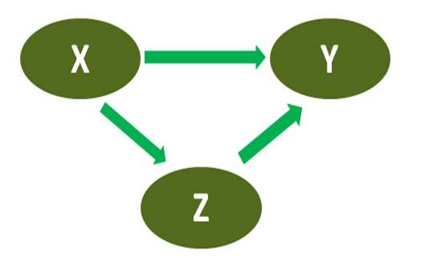

상관분석 correlation analysis 은 두 변수 사이의 관계가 관련되어 있는 정도를 측정하는 방법입니다. 여러 기법이 있는데, 피어슨 상관계수 Pearson correlation coefficient 는 상관분석에서 가장 흔하게 사용하는 방법입니다. 모집단에서 각 개체가 가진 특성 두 개를 X와 Y라고 하면, 두 변수 사이에 직선관계가 얼마나 강한가를 \(\rho\)=Corr(\(X,Y\))로 표기합니다. 상관계수는 -1에서 1 사이의 값을 가지며 0이면 두 변수가 독립적입니다.
상관계수는 리스트 변수인 result 속의 한 요소로서 이름 있는 데이터 named data 로 저장되어 있습니다. 그래서 인라인 코드에서 result[4]하면 미리 정한 규칙에 따라 숫자만을 되주지만 round(result[4])는 에러가 납니다. round()에는 숫자형 데이터만 들어갈 수 있기 때문입니다 (이름 있는 데이터가 아니고). 함수를 사용하면서 이름 있는 데이터 형에서 숫자만을 끄집어내려면 ’[[ ]]’을 사용합니다. 그래서 round(result[[4]])라고 해야 합니다. (또는 이름을 사용해서, result[["estimate"]]) 아래의 차이를 보세요.
위 상관분석 결과에서 나타난 용어 confidence interval과 estimate를 주목해주세요. 이 용어들은 9 장의 점 추정과 구간 추정에서 배웠습니다. 거기에 다시 가서 한 번 읽어보세요.
위의 corr.test 함수 결과가 저장된 result는 데이터 형태가 리스트 list 입니다. 다루기 어렵지 않지만 익숙해지기까지 시간이 걸리니까 위의 예를 보고 그대로 사용하거나 또는 코드청크의 결과를 보고 직접 숫자를 넣어도 좋습니다. 아래는 위의 청크를 실행한 뒤에 오른쪽 위 Environment 패널에 생긴 result를 클릭하면 왼쪽 위에 나타나는 result의 리스트 값들입니다. 작은 삼각형들을 눌러서 펼친 결과입니다.
편상관계수 partial correlation coeffiencient 는 두 확률변수의 상관관계를 계산할 때 두 변수에 모두 작용하는 제3의 변수가 있다면 왜곡된 상관계수를 산출할 수 있습니다. 이때 제3의 변수를 교란변수 confounding variable 라고 합니다. 즉 교란변수가 양쪽 두 변수에 허위상관관계를 만들어서 실제 관계 정도와 달라질 수 있는 것이죠. 이럴 때 교란변수의 영향을 제거한 뒤에 계산한 상관계수를 말합니다. 영향을 통제(제거)하려는 제3의 변수를 통제변수 control variable 라고 합니다.
예를 들면, 대학생들이 대학 교육의 결과로 소통 능력이 향상한다는 가설이 있다고 합시다. 가설을 검정하려고 학년(재학 기간)과 소통능력의 상관계수를 산출합니다. 그런데 나이가 늘수록 사회경험이 증가하니까, 나이도 소통능력의 향상에 영향을 미친다고 볼 수 있습니다. 그리고 학년이 올라갈수록 나이도 한 살씩 늘어갑니다. 따라서 소통능력의 향상에 미치는 나이의 영향을 통제해야만 순수하게 대학 교육의 효과를 측정할 수 있습니다. 이럴 때 학년과 소통능력의 상관계수에서 나이가 미치는 영향을 통제(제외)하고 계산한 상관계수가 편상관계수입니다.
\(X\), \(Y\)의 상관계수에서 교란변수 \(Z\)의 영향을 제외한 편상관계수 \(\rho _{XY\cdot Z}\) 는 \(\epsilon_X\)와 \(\epsilon_Y\)의 상관계수와 동일합니다. \(\epsilon_X\)는 \(Z\)로 \(X\)를 설명하고 남은 잔차이고 \(\epsilon_Y\) 는 \(Z\)로 \(Y\)를 설명하고 남은 잔차입니다. 이것은 \(X=\alpha Z+\epsilon_X\) 와 \(Y=\beta Z+\epsilon_Y\)의 공식으로 표현합니다. 잔차의 개념은 바로 뒤의 회귀분석에서 자세히 나옵니다. 그래서 \(\rho _{XY\cdot Z} = Corr(\epsilon_X, \epsilon_Y)\) 가 되고 이걸 풀어내면 나오는 아래의 공식을 편상관계수를 산출하는 데 사용합니다.
아래 Figure 12.4 을 봅니다. 변수X와 변수Y 사이에 직접경로와 간접경로가 모두 존재한다고 가정하면 X와 Y의 상관관계는 그 둘을 모두 합친 것입니다. 따라서 상관계수 \(\rho_{XY}\)는 직접경로 X\(\rightarrow\)Y와 간접경로 X\(\rightarrow\)Z\(\rightarrow\)Y를 합친 것입니다. 편상관계수 \(\rho_{XY \cdot Z}\)는 간접경로 X\(\rightarrow\)Z\(\rightarrow\)Y를 제외하고 직접경로 X\(\rightarrow\)Y만을 계산한 것입니다.

Figure 12.4: X와 Y의 관계 경로와 편상관계수
편상관계수는 ppcor 패키지를 설치하고 pcor() 함수를 사용하여 계산합니다.
12.3 공분산
확률변수 X와 확률변수 Y의 선형 연관성은 공분산 covariance 으로 측정이 가능합니다.
회귀분석 regression analysis 은 종속변수와 독립변수 사이의 관계를 추정하는 통계적 과정을 말합니다. 회귀분석에서 종속변수는 오직 한 개이며 결과 또는 반응 변수라고도 합니다. 독립변수는 하나 또는 여러 개일 수도 있으며 예측 또는 설명 변수라고도 불립니다. 독립변수가 하나면 단순회귀분석 simple regression analysis 이고 여러 개이면 다중회귀분석 multiple regression analysis 입니다. 여기서는 선형 회귀분석 linear regression 을 다루는데 그 중에서도 최소제곱법 least square method 을 이용해서 모수 추정을 하는 기법을 배웁니다.
12.4.1 단순회귀계수 산출
회귀분석은 선형 회귀모형 linear regression model 을 만드는데, 두 가지 핵심 목적을 가집니다. 하나는 독립변수를 이용하여 종속변수를 예측하는 것이고 둘째 것은 독립변수가 종속변수에 영향을 준다는 인과관계를 검정하려는 것입니다. 인과관계의 검정은 회귀분석만으로는 검정이 안 되고 문헌조사를 통한 논리적인 근거를 연구자가 따로 제공해야 합니다.
여기서 \(\beta _{0}\)와 \(\beta_{1}\)은 아직 모르는 모수(모 회귀계수)이고 \(x_{i}\)는 독립변수, \(Y_{i}\)는 종속변수입니다. \(e_{i}\)는 오차항 error term 이라고 하며 독립변수에 의해 설명되지 않는 종속변수의 잔여 부분을 말합니다. 오차항은 정규분포를 하는 확률변수입니다. \(\beta _{0}\)와 \(\beta_{1}\)은 회귀계수를 밑첨자 숫자로 구분했지만, 절편은 \(\alpha\)로 기울기는 \(\beta\)로 통상 문자를 달리해서 표시하는 방법을 사용합니다.
독립변수와 종속변수를 모두 \(z\)로 표준화해서 단순회귀분석을 하면 단순회귀계수 \(\beta\)는 두 변수의 피어슨 상관계수와 동일한 값을 갖습니다.
12.4.2 Anscombe’s quartet
1973년 통계학자 안스콤이 만든 데이타셋 4개. 동일한 기술 통계를 가지고 아주 비슷한 회귀직선을 갖지만 명백하게 다른 분포를 지닙니다. 단지 통계 결과만이 아니라 시각적 분포를 살펴야 한다는 점을 보여줍니다. 극단값을 주목해야 한다는 점도 있고요. 아래는 4개의 데이터셋이 동일한 속성을 가진 것을 보여주는데 특히 회귀식이 같다는 점을 주목해 주세요.
Table 12.1: 안스콤이 만든 네 쌍의 데이터
x1
y1
|
x2
y2
|
x3
y3
|
x4
y4
10.0
8.04
|
10.0
9.14
|
10.0
7.46
|
8.0
6.58
8.0
6.95
|
8.0
8.14
|
8.0
6.77
|
8.0
5.76
13.0
7.58
|
13.0
8.74
|
13.0
12.74
|
8.0
7.71
9.0
8.81
|
9.0
8.77
|
9.0
7.11
|
8.0
8.84
11.0
8.33
|
11.0
9.26
|
11.0
7.81
|
8.0
8.47
14.0
9.96
|
14.0
8.10
|
14.0
8.84
|
8.0
7.04
6.0
7.24
|
6.0
6.13
|
6.0
6.08
|
8.0
5.25
4.0
4.26
|
4.0
3.10
|
4.0
5.39
|
19.0
12.50
12.0
10.84
|
12.0
9.13
|
12.0
8.15
|
8.0
5.56
7.0
4.82
|
7.0
7.26
|
7.0
6.42
|
8.0
7.91
5.0
5.68
|
5.0
4.74
|
5.0
5.73
|
8.0
6.89
아래는 안스콤의 데이터 네 쌍이 가진 거의 동일한 기술 통계를 표로 나타낸 것입니다. 완전히 일치하거나 적어도 소숫점 둘째 자리까지 동일할 정도로 유사합니다.
Table 12.2: 안스콤 4 쌍의 유사한 기술 통계 (평균, 분산, 상관계수, 회귀식)
속성
값
정확도
x의 평균
9
일치
x의 분산 \(s_x^2\)
11
일치
y의 평균
7.50
소수점 2자리까지
y의 분산 \(s_y^2\)
4.125
\(\pm 0.003\)
x와 Y의 상관계수
0.816
소수점 3자리까지
회귀식
y=3.00+0.500x
각 소수점 2와 3자리까지
회귀직선 \(R^2\)
0.67
소수점 2자리까지
par(mfrow=c(2,2), mar =c(2, 4, 1, 2) +1) # 그래프 영역을 2x2로 분할, 여백과 크기를 조정data("anscombe")# for 루프로 그래프 4번 반복 생산for (i in1:4) { p <-plot(anscombe[,i], anscombe[,i+4], type ="p", pch =21, xlim =c(3, 20), ylim =c(3, 14), ylab =paste0("y", i))p <-abline(a=3, b=0.5, col="red") # 그래프에 선 넣기}
Figure 12.5: 안스콤의 네 쌍 데이터가 만든 각 산포도의 비교
12.4.3 단순회귀모형 적합성 검정
적합도 검정(goodness-of-fit test)은 계수를 구해 도출한 회귀식 \(Y = \beta_0 + \beta_1 X\)이 표본의 실제값을 얼마나 잘 설명하는지를 확인하는 방법입니다. 추정한 회귀식의 설명력에 대한 척도를 \(R^2\)(회귀선의 설명력, 결정계수)으로 표현합니다.
추정의 표준오차가 적을수록 회귀식이 잘 작동하는 것이지만 \(s\)는 표준화가 되지 않아서 \(Y\) 단위에 따라 달라져서 다른 회귀분석과 비교하기 어려운 단점이 있습니다. 그래서 결정계수를 이용합니다.
12.4.7 결정계수
결정계수 coefficient of determination 는 총제곱합 \(SST\) 중에서 회귀직선이 설명하는 제곱합 \(SSR\)의 비율로 나타냅니다. 실제로는 계산하기 편하게 \(SSE\)를 이용하여 산출합니다. 결정계수는 회귀 모델이 변동을 얼마나 설명하는지에 대한 설명력을 나타냅니다.
\[ R^2=\frac{SSR}{SST} = 1 - \frac{SSE}{SST} \]
12.4.8 회귀계수의 신뢰구간
12.4.8.1\(\beta\)의 신뢰구간 추정
회귀계수 \(\beta\)의 표집분포는 \(n-2\)의 자유도와 표준오차 \(S_b\)를 가진 \(t\) 분포를 따르므로 그 신뢰구간은 아래와 같습니다. 이것은 앞서 배운 평균의 신뢰구간과 오차범위 계산 방법이 동일합니다.
회귀모형에서는 오차항에 대한 가정이 여럿입니다. 선형성, 정규성, 독립성, 등분산성 등인데 이것을 충족하는지 잔차를 통해서 검토합니다. 잔차는 통상 표준화를 해서 검토하는데 표준화한 잔차를 영어로는 studentized residuals 라고 합니다. 아래의 \(d_i\)가 표준화한 잔차입니다.
\[ d_i = \frac{e_i}{\sqrt{MSE}} \]
12.5.2 선형성 검토
\(x\)에 대해서 산점도를 그렸을 때 0을 중심으로 무작위하게 나타나야 합니다. 아래의 잔차 산포도는 잔차가 0을 중심으로 고루 분포되어 있습니다.
Code
x <-seq(from =0, to =1, length.out =301) # 0부터 1까지 501개 등간 숫자 생성y <-rnorm(301, mean=0, sd=0.3) # 평균 0, 표준편차 0.3인 정규분포 난수를 501개 생성par(mar =c(1, 1, 1, 1)) # 그림 주위의 여백 조정. par; parameter. mar; margin (상, 우, 하, 좌)plot(x, y, type ="p", pch =20, xlim =c(-0.03, 1.02), ylim =c(-2.1, 2.1), axes=F, xlab ="", ylab ="")# pch; point character. 20; 꽉차고 작은 둥근 점. axes=F; 축 눈금이 없다abline(0,0, v=-0.04, col ="black") # y 축을 대신할 선을 그린다. v; vertical line. (h는 수평선)text(1.05, -0.1, "x") # 그래프 안에 좌표로 텍스트를 넣을 위치를 표시text(-0.06, 1.1, "e")text(-0.06, -0.1, "0")
Figure 12.7: 잔차의 선형성 검토
위의 그래프는 잔차만을 그린 것이지만 원래 그래프 상에서 그대로 나타내면 아래와 같습니다. 윗그림과 잔차는 동일합니다.
Code
x <-seq(from =0, to =1, length.out =301) # 0부터 1까지 501개 등간 숫자 생성y <-rnorm(301, mean=0, sd=0.3) # 평균 0, 표준편차 0.3인 정규분포 난수를 501개 생성y1 <-1+3*x +y # y=1+3*x+y 맨뒤 y는 잔차par(mar =c(1, 1, 1, 1)) # 그림 주위의 여백 조정. par; parameter. mar; margin (상, 우, 하, 좌)plot(x, y1, type ="p", pch =20, axes=F, xlim =c(-0.03, 1.02), ylim =c(0, 5), xlab ="x", ylab ="y")# pch; point character. 20; 꽉차고 작은 둥근 점. axes=F; 축 눈금이 없다abline(0,0, v=-0.04, col ="black") # y 축을 대신할 선을 그린다. v; vertical line. (h는 수평선)abline(1, 3, col ="blue", lwd=2) text(1.05, -0.1, "x") # 그래프 안에 좌표로 텍스트를 넣을 위치를 표시text(-0.06, 1.1, "e")text(-0.06, -0.1, "0")
Figure 12.8: 잔차의 선형성 검토 (산포도)
Code
x <-seq(from =0, to =1, length.out =301) # 0부터 1까지 501개 등간 숫자 생성y <-rnorm(301, mean=0, sd=0.3) # 평균 0, 표준편차 0.3인 정규분포 난수를 501개 생성y1 <-2.3+3*x +y # y=1+0.5*x+y 맨뒤 y는 잔차par(mar =c(1, 1, 1, 1)) # 그림 주위의 여백 조정. par; parameter. mar; margin (상, 우, 하, 좌)plot(x, y1, type ="p", pch =20, axes=F, xlim =c(-0.03, 1.02), ylim =c(-1, 6), xlab ="x", ylab ="y")# pch; point character. 20; 꽉차고 작은 둥근 점. axes=F; 축 눈금이 없다abline(0,0, v=-0.04, col ="black") # y 축을 대신할 선을 그린다. v; vertical line. (h는 수평선)abline(2.3,3, col ="blue", lwd=2) points(x, y, pch=20, col="purple")text(1.05, -0.15, "x") # 그래프 안에 좌표로 텍스트를 넣을 위치를 표시text(-0.06, 0.8, "e", col="purple")text(-0.06, -0.1, "0")text(-0.06, 6, "y")
Figure 12.9: 잔차의 선형성 검토: 비교
12.5.3 정규성 검토
오차항의 분포가 정규분포를 이루어야 선형회귀 모형을 적용할 수 있습니다. Figure 12.7 처럼 x값에 따라 옆으로 퍼져 있는 잔차를 X에 상관하지 않고 잔차 자체의 크기 순서로 늘어놓으면, 빈도 분포가 아래처럼 정규분포와 유사한 형태를 이루어야 합니다. (높이를 해당 잔차의 빈도로 해석해주세요.)
Code
lx <-41# x의 갯수 (간격)s <-seq(-4, 4, length.out=lx)p <-dnorm(s, mean=0, sd=2) x <-c()y <-c()for (i in1:lx) {k <- p[i] %/%0.02# 나눈 몫x <-c(x, rep(s[i], times=k) ) # y 갯수만큼 x를 생성y <-c(y, runif(k)*p[i] ) # y를 상대도수 갯수만큼 랜덤하게 생성}for (i in1:length(x)){ # x 값을 좌우로 약간씩 변형해서 그래프를 보기 좋게 x[i] <- x[i] +runif(1)*0.1# runif(1) ; 0과 1 사이의 숫자를 1개 생성}par(mar =c(1, 1, 1, 1)) # 그림 주위의 여백 조정. par; parameter. mar; margin (상, 우, 하, 좌)plot (x,y, pch=20, axes=F, ylim =c(-0.007, 0.2), xlab ="", ylab ="") # axes=F; 축 없애기abline (0,0) # x 축 그리기lines(s,p,type="l") # 정규분포 곡선 넣기text(4, -0.005, "e") # 그래프 안에 좌표로 텍스트를 넣을 위치를 표시text(0, -0.005, "0")
Figure 12.10: 잔차의 정규성 검토
12.5.4 등분산성 검토
잔차는 \(\hat Y_i\)에 대해서 \(\epsilon_i\)의 분포가 동일한 분산을 가져야 한다는 가정을 충족해야 합니다.
Code
par(mfrow=c(1,2), mar =c(2, 4, 1, 2) +1) # 그래프 영역을 1x2로 분할, 여백과 크기를 조정x <-seq(from =0, to =1, length.out =101) # 0부터 1까지 101개 등간 숫자 생성y <-rnorm(101, mean=0, sd=0.3) # 평균 0, 표준편차 0.3인 정규분포 난수를 501개 생성par(mar =c(1, 1, 1, 1)) # 그림 주위의 여백 조정. par; parameter. mar; margin (상, 우, 하, 좌)plot(x, y, type ="p", pch =20, xlim =c(-0.04, 1.02), ylim =c(-1.3, 1.3), axes=F, xlab ="", ylab ="")# pch; point character. 20; 꽉차고 작은 둥근 점. axes=F; 축 눈금이 없다abline(0,0, v=-0.04, col ="black") # y 축을 대신할 선을 그린다. v; vertical line. (h는 수평선)text(1.05, -0.1, "Y") # 그래프 안에 좌표로 텍스트를 넣을 위치를 표시text(-0.06, 1.3, "e")abline(0, 0, h =0.6, col="blue")abline(0, 0, h =-0.6, col="blue")x1 <-seq(from =0, to =1, length.out =101) # 0부터 1까지 501개 등간 숫자 생성y1 <-rnorm(101, mean=0, sd=0.3) # 평균 0, 표준편차 0.3인 정규분포 난수를 501개 생성for (i in1:101) { y1[i] <- y1[i]/4+ y[i]*(i/50) }par(mar =c(1, 1, 1, 1)) # 그림 주위의 여백 조정. par; parameter. mar; margin (상, 우, 하, 좌)plot(x1, y1, type ="p", pch =20, xlim =c(-0.04, 1.02), ylim =c(-1.3, 1.3), axes=F, xlab ="", ylab ="")# pch; point character. 20; 꽉차고 작은 둥근 점. axes=F; 축 눈금이 없다abline(0,0, v=-0.04, col ="black") # y 축을 대신할 선을 그린다. v; vertical line. (h는 수평선)text(1.05, -0.1, "Y") # 그래프 안에 좌표로 텍스트를 넣을 위치를 표시text(-0.06, 1.3, "e")abline(0, 1, col="blue")abline(0, -1, col="blue")
Figure 12.11: 잔차의 등분산성 검토
왼쪽은 \(\hat Y_i\)에 대해서 \(e_i\)가 등분산이지만, 오른쪽은 \(\hat Y_i\)값이 커지면서 \(e_i\)의 분산도 커지므로 등분산 가정을 충족하지 못합니다. 몸무게와 키의 관계를 회귀분석할 때, 몸무게가 클수록 키가 커지니까 오차의 분산도 증가하는 경향을 보이는데 그게 오른쪽 그래프의 경우와 유사합니다.
12.5.5 독립성 검토
잔차들이 서로 독립적이어야 선형 회귀모델이 가능합니다. 무언가 서로 연관이 있어 보이는지 산포도로 확인해봅니다. 만일 잔차들이 자기상관 autocorrelation 이 있다면, 즉 어떤 식으로든 서로 연관이 있다면 선형 회귀모델의 가정은 충족하지 않습니다.
잔차 \(e_i\)가 있을 때, 자기 앞의 잔차가 그 전 것보다 증가했고 자신도 증가했는데 자기 뒤의 잔차도 증가한다면, 그건 자기상관성의 가능성이 있는 겁니다. 감소하는 경우도 마찬가지입니다. 그런 경우가 많다면 독립성의 가정은 성립하지 않고 따라서 선형 회귀분석을 사용하지 못합니다.
자기상관은 더빈-왓슨 Durbin-Watson 검정통계량 \(d\)을 사용해서 검정할 수 있습니다.
여기서도 분산분석표 analysis of variance table 는 제곱합 \(SS\); sum of squares 과 자유도, 제곱평균\(MS\); mean square, \(F\)값 등을 표로 나타낸 것입니다. 각 요소들의 관계를 한 눈에 살필 수 있습니다. \(K\)는 독립변수의 수입니다.
다중회귀분산분석표
요인
자유도
제곱합
제곱평균
\(F\)
\(p\)
회귀
\(k\)
\(SSR=\sum(\hat Y_i-\bar Y)^2\)
\(MSR=\frac{SSR}{1}\)
\(\frac{MSR}{MSE}\)
잔차
\(n-1-k\)
\(SSE=\sum(Y_i-\hat Y_i)^2\)
\(MSE=\frac{SSE}{n-2}\)
계
\(n-1\)
\(SST=\sum(Y_i-\bar Y)^2\)
\(MSE\)는 오차 분산 \(\sigma_{\epsilon}^{2}\) 의 불편 추정량 unbiased estimator 입니다.
여기서 나오는 \(F\)값과 그에 대응하는 \(p\)값은 회귀모형의 유의성 검정에 사용합니다.
결정계수는 회귀식이 독립변수와 종속변수 간의 관계를 잘 설명하는 정도를 보여주는 척도입니다. 다중회귀모형의 결정계수는 아래의 공식으로 얻어집니다. 단순회귀모형과 동일합니다.
\[ R^2=\frac{SSR}{SST} = 1 - \frac{SSE}{SST}\]
결정계수의 제곱근을 상관계수라고 합니다. 상관계수 \(R=\sqrt{R^2}\)
단순회귀모형과 달리 다중회귀모형의 결정계수는 문제가 있습니다. 독립변수의 수가 늘어날수록 \(SSE\)는 감소하는데 \(SST\)는 그대로 있으므로, 독립변수의 수가 결정계수의 값을 증가시키기 때문입니다. 독립변수의 수가 많아지면 모형도 복잡해지고 효율성도 감소하며, 무엇보다도 독립변수 사이의 상관관계가 높아지게 되어 회귀계수의 해석이 어려워집니다. 독립변수 사이의 상관관계는 다중공선성 문제라고 하여 회귀분석에서 가능하다면 피해야 하므로 독립변수의 수가 많아지는 게 꼭 좋은 일은 아닙니다. 그래서 독립변수의 수를 고려해서 결정계수를 다소 조정한 것이 조정결정계수 adjusted coefficient of multiple determination 입니다. 조정결정계수의 공식은 아래와 같습니다.
\[ R^2=1-\frac{n-1}{n-k-1}(\frac{SSE}{SST}) \]
독립변수가 하나 늘어나면 \(k\)가 1 증가하므로 분모가 증가합니다. 따라서 \(SSE\)가 상응하는 만큼 줄어들지 충분히 줄어즐지 않는다면 \(R^2\)은 작아집니다. 독립변수를 추가해도 추가 설명력이 약하다면 조정결정계수는 오히려 감소하므로 다중회귀모형에서 독립변수를 추가할 때 조정결정계수를 잘 살펴서 판단하는 것이 좋습니다.
12.6.4 다중회귀 유의성 검정
회귀모형의 유의성은 독립변수가 종속변수에 정말로 영향을 미치는지 검정하는 겁니다. 유의성을 검토하는 절차는 아래와 같습니다.
가설을 세운다 \(H_0: \beta_1 = \beta_2 = \cdots =\beta_k = 0\) 모든 회귀계수는 0이다. \(H_A: \beta_j \ne 0\) 회귀계수 중에 적어도 하나는 0이 아니다.
다중회귀모형이 유용한가는 유의성 검정만으로 결정하는 것이 아니라 결정계수, 추정의 표준오차 등을 복합적으로 살핀 후에 결정하는 것이 바람직합니다.
12.6.5 다공선성
다중회귀모형에서 독립변수 또는 설명변수가 여러 개일 때 다공선성의 문제가 발생하기 쉽습니다. 다중공선성 multicollinearity 은 독립변수 사이에 높은 상관관계가 있을 때 모형의 추정에 나쁜 영향을 주는 문제를 말합니다. 따라서 다중회귀모형을 수립할 때 독립변수의 추가는 가능한 한 적은 것이 바람직하며 신중하게 판단해야 합니다. 다음의 경우에 다중공선성이 발생하기 쉽습니다.
독립변수들 사이의 상관관계가 높게 나타났을 때
중요하게 생각했던 독립변수의 회귀계수가 유의미하게 나타나지 않았을 때
추정한 회귀게수의 부호가 이론이나 과거 경험에서 예상했던 것과 반대일 때
독립변수를 추가하거나 제거했을 때 다른 회귀계수들에게 큰 변화가 있을 때
다중공선성을 측정하는 분산팽창인자 VIF 의 값이 기준을 넘었을 때
독립변수를 선택할 때 결정계수와 조정결정계수의 증가는 높은 것이 좋고, 평균제곱오차와 멜로우 C 는 낮은 것이 좋습니다.
이 회귀식 모델의 F값은 69.21 이고 이때 p=0.000 < 0.05 이므로 의미가 있다.
hp의 회귀계수가 -0.03177 이고 그에 해당하는 t 값은 -3.519, p값은 0.00145다. p값이 0.025(\(\alpha=0.05\) ; 양측검정)보다 적으므로 hp의 회귀계수가 0이라는 귀무가설을 기각한다. 따라서 hp의 회귀계수가 0이 아니라는 대립가설을 채택한다. hp의 mpg에 대한 영향은 통계적으로 유의미하다.
또한 wt의 회귀계수가 -3.87783 이고 그에 해당하는 t 값은 -6.129, p값은 0.000이다. p값이 0.025(\(\alpha=0.05\) ; 양측검정)보다 적으므로 wt의 회귀계수가 0이라는 귀무가설을 기각한다. 따라서 wt의 회귀계수가 0이 아니라는 대립가설을 채택한다. wt의 mpg에 대한 영향은 통계적으로 유의미하다.
결과에 나타난 용어의 의미
위 회귀분석 결과의 Coefficients:에서 나타난 용어 estimate와 Std. error, t value를 주목해주세요. 그것들을 이용해서 confidence interval을 계산할 줄 알아야 합니다. 이 용어들은 9 장의 점 추정과 구간 추정에서 배웠습니다. 거기에 가서 다시 한 번 읽어보세요.
회귀계수의 구간 추정은 confint(결과_변수) 함수를 사용할 수 있지만 신뢰수준을 달리 줄 수 있으므로 직접 계산할 수도 있어야 합니다.
12.6.6 교호작용
교호작용은 독립변수가 상호작용을 하며 종속변수에 미치는 영향을 말합니다. 예를 들어, 독립변수 hp와 wt, 종속변수 mpg가 있다고 합시다. hp가 10마력일 때 wt가 mpg에 5만큼 영향을 주고 (즉 wt 회귀계수가 5), hp가 20마력일 때도 여전히 wt가 5만큼 영향을 준다면 (즉 여전히 wt 회귀계수가 5) 교호작용 효과가 없는 것입니다.
그러나 hp가 10마력일 때는 wt가 mpg에 5만큼 영향을 주지만, hp가 20마력일 때는 wt가 10만큼 영향을 준다면 교호작용 효과가 있는 것입니다. 즉 hp가 늘어날수록 wt가 mpg에 주는 영향이 늘어나거나 줄어들면 교호작용 효과가 있는 것이고, hp의 크기에 관계없이 wt가 mpg에 주는 영향이 같다면 교호작용이 없는 것입니다.
Example 12.9
위의 회귀분석을 교호작용을 넣어서 회귀분석을 합니다.
result3.car <-lm(mpg ~ hp + wt + hp:wt, data = mtcars)# lm(mpg ~ hp*wt, data = mtcars)도 위와 동일한 코딩summary(result3.car)
Call:
lm(formula = mpg ~ hp + wt + hp:wt, data = mtcars)
Residuals:
Min 1Q Median 3Q Max
-3.0632 -1.6491 -0.7362 1.4211 4.5513
Coefficients:
Estimate Std. Error t value Pr(>|t|)
(Intercept) 49.80842 3.60516 13.816 5.01e-14 ***
hp -0.12010 0.02470 -4.863 4.04e-05 ***
wt -8.21662 1.26971 -6.471 5.20e-07 ***
hp:wt 0.02785 0.00742 3.753 0.000811 ***
---
Signif. codes: 0 '***' 0.001 '**' 0.01 '*' 0.05 '.' 0.1 ' ' 1
Residual standard error: 2.153 on 28 degrees of freedom
Multiple R-squared: 0.8848, Adjusted R-squared: 0.8724
F-statistic: 71.66 on 3 and 28 DF, p-value: 2.981e-13
답:
hp와 wt가 각각 종속변수 mpg에 통계적으로 유의미한 효과를 줍니다. 교호작용 효과도 통계적으로 유의미하게 나타나서 hp와 wt의 효과의 크기인 회귀계수가 (교호작용 포함 전과) 달라졌습니다.
교호작용의 호귀계수는 0.02785이고 그에 해당하는 t값이 3.753, p값이 0.000811입니다. p<0.025(\(\alpha=0.05\) 양측검정)이므로 교호작용의 회귀계수가 0이라는 귀무가설을 기각합니다. 따라서 교호작용의 회귀계수가 0이 아니라는 대립가설을 채택합니다. hp와 wt의 교호작용이 mpg에 대한 영향은 통계적으로 유의미합니다.
Exercise 12.1
airquality 데이터에서 Ozone를 종속변수로 하고 Solar.R, Wind, Temp를 독립변수로 하여 회귀분석을 하세요. 변수 간의 산포도와 상관계수를 참고하세요.